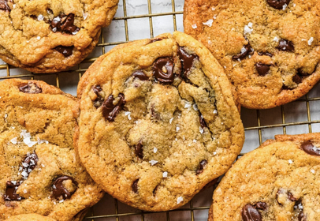

Homepage
Chocolate Chip Cookies

These gooey chocolate chip cookies are
perfect for any occasion and easy to make at home.
Ingredients
- 2 1/4 Cups All-Purpose Flour
- 1 Tsp Baking Soda
- 1 Cup Unsalted Butter, softened
- 3/4 Cup Granulated Sugar
- 3/4 Cup Brown Sugar, packed
- 1 Tsp Vanilla Extract
- 2 Large Eggs
- 2 Cups Semi-Sweet Chocolate Chips
Directions
- Preheat your oven to 375°F (190°C).
- In a small bowl, combine the flour and baking soda. Set aside.
- In a large mixing bowl, beat the softened butter, granulated sugar,
brown sugar, and vanilla extract until creamy.
- Add the eggs one at a time, beating well after each addition.
- Gradually add the flour mixture to the wet ingredients, mixing well
after each addition.
- Stir in the chocolate chips.
- Drop rounded tablespoons of dough onto ungreased baking sheets.
- Bake for 9 to 11 minutes or until golden brown.
- Cool on baking sheets for 2 minutes; remove to wire racks to cool
completely.
Homepage